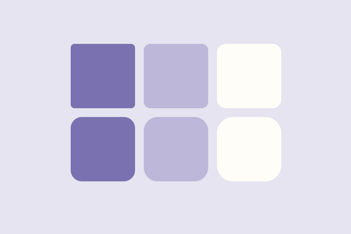

Pierwsza strona internetowa
Osobista przestrzeń w sieci. Semantyczny HTML i przejrzysty układ.
WYBRANE PRACE
Eksperymenty ze strukturą, układem i kolorem. Każdy projekt to nowa lekcja.
Osobista przestrzeń w sieci. Semantyczny HTML i przejrzysty układ.
Czytelna prezentacja edukacji, umiejętności i kolejnych kroków.

Mini-galeria inspirowana kafelkami z pierwszego laboratorium.
CHWILA INSPIRACJI
Krótki materiał wideo jako część multimedialnej galerii. Odtwarzanie uruchamiasz samodzielnie.